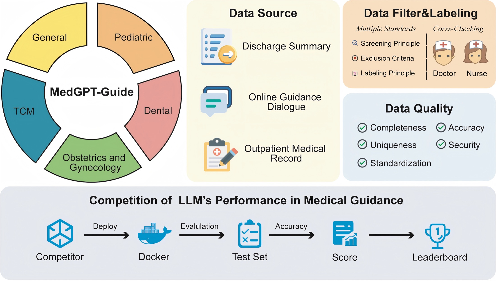

About Me
I am a remote research intern at the University of California, Santa Cruz (UCSC) and a medical AI research intern at Shanghai AI Laboratory. My research focuses on clinical agents, longitudinal electronic health record (EHR) reasoning, and trustworthy medical AI.
Drawing on my clinical training, I study how medical AI systems use evolving evidence to update patient assessments and make safe, consistent decisions. My current work includes WARD, a benchmark for longitudinal clinical reasoning and interactive, tool-mediated clinical actions.
Research Interests
Electronic Health Records (EHR), World Models, Agent Benchmarks.
News
- [Aug 2026] Med-GRADE: Medical Grading and Rubric-based Assessment of Doctor-Patient Encounters
Chao Ding*
Accepted to EMNLP 2026. * Co-first author.
- [Jul 2026] Governing Clinical Readiness Claims Derived from Medical AI Benchmark Results
Published in Journal of Medical Systems. DOI 2025 JIF 8.8
- [2026] Advancing Medical AI through Benchmarking and Competition for Specialty Triage
Published in npj Digital Medicine. DOI 2025 JIF 18.0
- [2026] SafeMed-R1 released with open code for clinician-audited safety and ethics alignment in medical LLMs.
- [2026] Beyond Knowledge to Agency: Evaluating Expertise, Autonomy, and Integrity in Finance with CNFinBench
Accepted to KDD 2026. DOI
- [2026] Paper accepted by CVPR 2026 on biomedical object referring and segmentation with MLLMs.
- [2025] TyG Index, Depression, and Cognitive Dysfunction: NHANES with Machine Learning Support
Published in Journal of Affective Disorders. DOI 2025 JIF 5.7
- [2025] Smoking Types and Stroke Risk: Development of a Predictive Model for Identifying Stroke Risk
Published in Frontiers in Physiology. DOI 2025 JIF 4.3
- [2025] Joined Shanghai Artificial Intelligence Laboratory as a Research Intern.
- [2024] U-Shaped Relationship between TyG Index and Depression Using Machine Learning
Published in Heliyon. DOI 2025 JIF 3.4
Selected Publications
* indicates equal contribution / co-first authorship. The full list is available on Google Scholar. Journal metrics are 2025 Journal Impact Factors, released in 2026.
Medical AI & Clinical Safety
Under review

Under review
Conversational Fluency Does Not Ensure Clinical Safety in Patient-Facing Medical AI
Ding, C.*, et al.
Manuscript under review at NEJM AI.
Preprint · 2026
Ding, C.*, et al.
arXiv preprint, 2026.
npj Digit Med

2025 JIF 18.0
Ding, C.*, Bian, M.*, Yuan, M.*, et al.
npj Digital Medicine, 9, Article 308 (2026).
Agent Benchmarks
KDD 2026
Ding, J.*, Ding, C.*, Jiang, Y.*, et al.
ACM SIGKDD Conference on Knowledge Discovery and Data Mining, 2026.
Research Experience
Summer 2026 — Present
Remote Research Intern
University of California, Santa Cruz (UCSC) · Remote
01
WARD: Benchmarking Longitudinal Clinical Agents
- Developing WARD, a benchmark for evaluating how clinical agents translate accumulating EHR evidence into patient-state assessments and timely, safe clinical actions.
- Building complementary longitudinal and interactive evaluation tracks to assess evidence use, state updates, action selection, and stopping decisions as clinical cases evolve.
- Designing evaluation pipelines and temporal diagnostics to identify failures in evidence integration, decision consistency, and clinical progression through sequential tool use.
Dec. 2024 — Present
Research Intern
Shanghai Artificial Intelligence Laboratory · Shanghai, China
01
Patient-Facing Multi-Agent Medical AI
arXiv / Manuscript under review at NEJM AI · Dec. 2025 — May 2026
- Built a simulated patient-doctor evaluation environment integrating patient simulators, frontier LLM doctor backbones, an automated clinical judge, and a SafeMed-R1 in-loop safety controller.
- Formalized delayed escalation as a temporal safety failure and evaluated five LLMs across 150 multi-turn consultations against a 40-case clinician reference benchmark.
- Implemented a five-action controller—PASS, REWRITE, ASK-MORE, ESCALATE, and REFUSE—reducing mean escalation turn from 6.28 to 3.78 rounds and missed escalation from 62.5% to 12.5%.
02
SafeMed-R1: Medical LLM Safety & Ethics
arXiv:2605.28338 · Code · Dec. 2024 — Dec. 2025
- Developed SafeMed-R1, a safety- and ethics-aligned medical LLM based on Qwen3-32B, using SFT and RL/GRPO with clinician-audited reasoning traces and red-team jailbreak stress testing.
- Built the Clinical Trust Signals pipeline for expert-reviewed QA-CoT construction, rubric scoring, adversarial re-answering checks, and benchmark evaluation.
- Deployed SafeMed-R1 as both a standalone aligned medical model and a modular turn-level governance model for patient-facing dialogue.
03
MedBench / MedTriage: Specialty Triage
Homepage · npj Digital Medicine · Dec. 2024 — Apr. 2025
- Built MedTriage from hospital intake records, online guidance dialogues, and outpatient clinical notes with leakage-prevention cleaning and strict multi-label department recommendation.
- Developed MedGPT-Guide, a retrieval-augmented triage model using BGE-m3 retrieval, CoT prompting, candidate-order perturbation, self-consistency voting, and ensemble aggregation.
- Contributed to MedBench infrastructure spanning 700k+ expert-curated tasks, 24 primary and 91 secondary specialties, and tracks for LLMs, multimodal models, and clinical agents.
04
High-Stakes Financial LLM Agents
Project · DOI · Code · KDD 2026
- Co-developed CNFinBench to evaluate expertise, autonomy, and integrity across 29 subtasks, 11,947 single-turn QA instances, and 321 multi-turn adversarial dialogues.
- Designed workflow evaluation covering requirement parsing, path planning, API/database operations, tool invocation, multi-agent collaboration, and result verification.
- Helped develop HICS to quantify behavioral compliance drift across open- and closed-source models under multi-turn attack settings.
Clinical Training
Jul. 2022 — Jul. 2025
Standardized Residency Trainee
Putuo District Central Hospital, Shanghai University of Traditional Chinese Medicine
- Completed standardized residency training across emergency medicine, cardiology, respiratory medicine, pediatrics, obstetrics, neurology, and related departments.
- Participated in outpatient, inpatient, and emergency-care settings, building first-hand experience in assessment, differential diagnosis, patient communication, and referral decisions.
- Managed and observed high-risk presentations including chest pain, acute dyspnea, obstetric bleeding, pediatric fever, trauma, infection, and neurologic emergencies.
Education
Expected Dec. 2026
Master of Medicine
Shanghai University of Traditional Chinese Medicine
Medical Statistics · Research Methodology · Scientific Writing · Clinical Practice
2015 — 2020
Bachelor of Medicine
Jiangxi University of Traditional Chinese Medicine
Anatomy · Physiology · Pathology · Pharmacology · Medical Imaging · Immunology
Services
Conference Reviewers